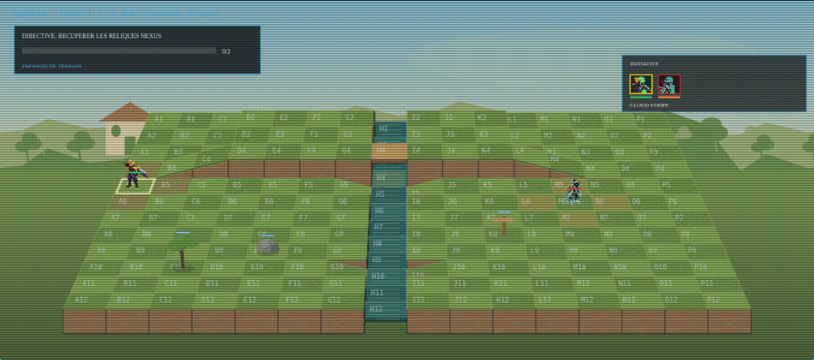
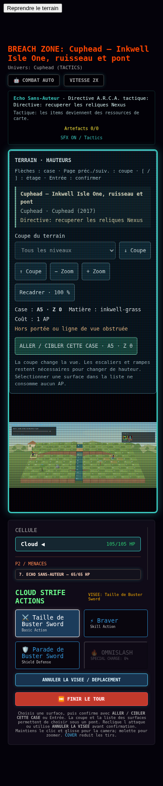
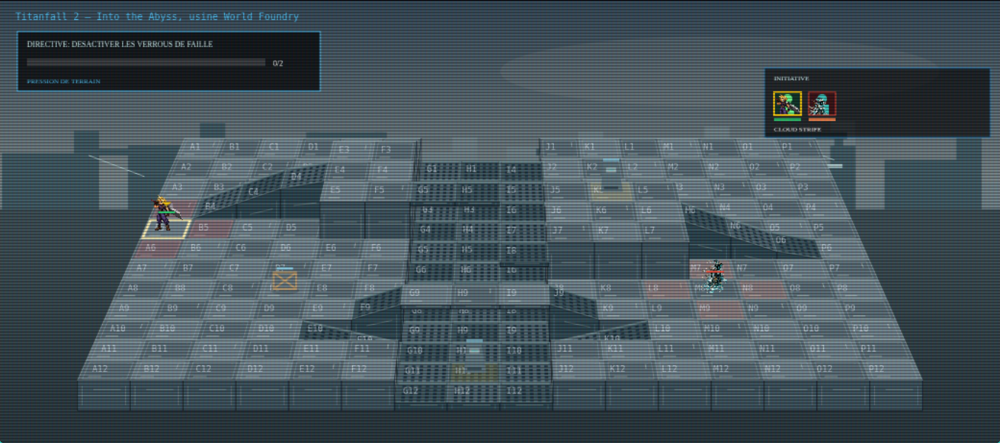
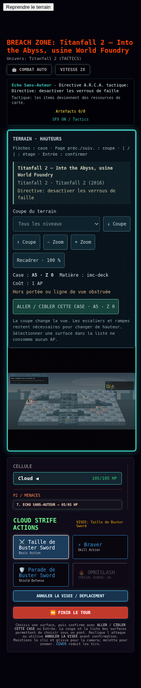
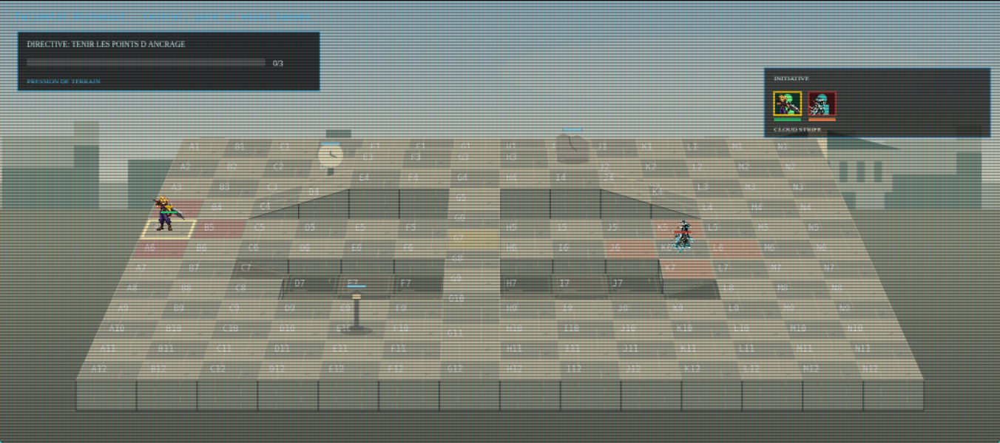
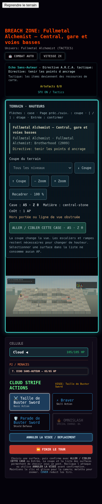
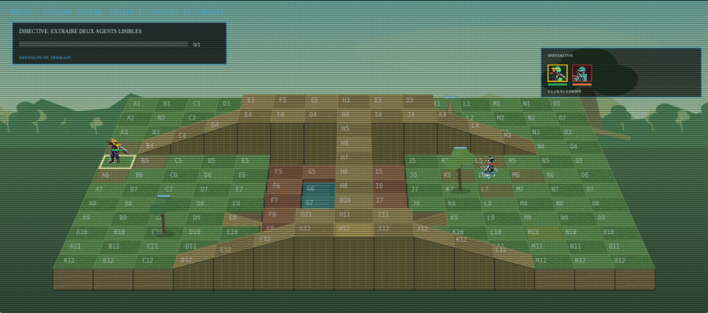
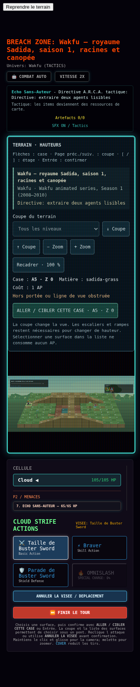

Terrains Tactics W16 — contrôle en jeu
Contrôle préliminaire : 4 secteurs lancés depuis le mode personnalisé. Reliefs, matières et environnements dédiés sont visibles dans le vrai GameCanvas. Ces grilles sont des adaptations originales de lieux des œuvres citées ; elles ne sont pas des plans officiels reproduits à l’identique.
Inkwell Isle One — grassy paths, brook banks and small wooden bridges
Cuphead · Cuphead (2017)
Directive: recuperer les reliques Nexus

Vue mobile à 375 pixels

IMC World Foundry — service floor, assembly trench and industrial catwalks
Titanfall 2 · Titanfall 2 (2016)
Directive: desactiver les verrous de faille

Vue mobile à 375 pixels

Central City — stone station approach, raised concourse and rail cutting
Fullmetal Alchemist · Fullmetal Alchemist: Brotherhood (2009)
Directive: tenir les points d ancrage

Vue mobile à 375 pixels

Sadida Kingdom — forest root terraces and canopy access
Wakfu · Wakfu animated series, Season 1 (2008–2010)
Directive: extraire deux agents lisibles

Vue mobile à 375 pixels
